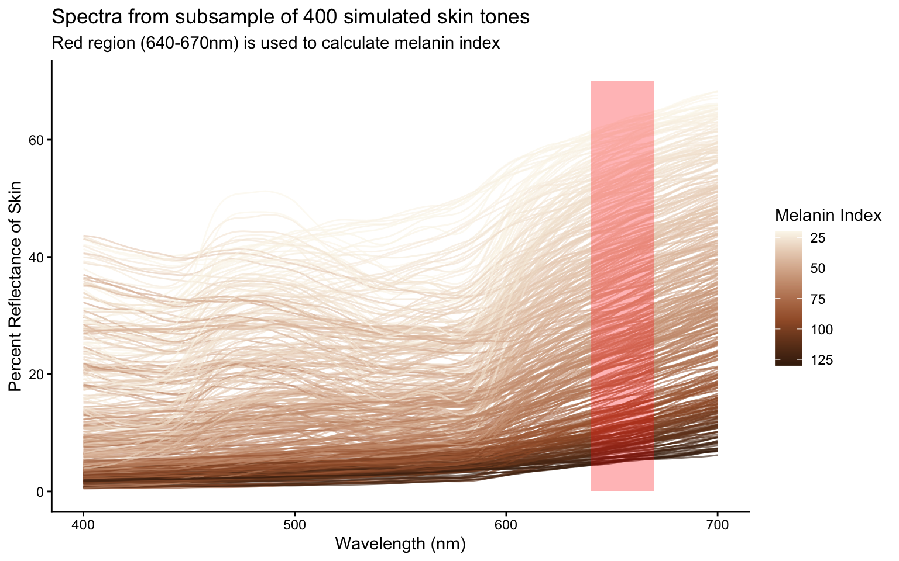
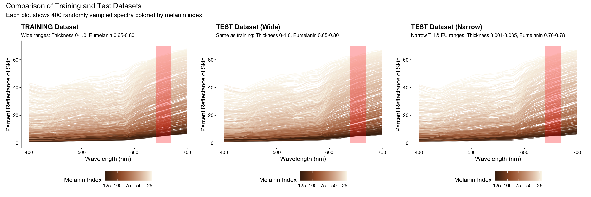

Simulated Reflectance
1 Overview of Simulated Skin Reflectance Datasets
This analysis examines three distinct datasets of simulated skin reflectance spectra:
- Training Dataset: Wide parameter ranges for model training
- Test Dataset (Wide): Same parameter ranges as training for validation
- Test Dataset (Narrow): Restricted parameter ranges to test model performance on a specific subset
Note: All datasets measure reflectance from 380-1000nm wavelength range, though plots focus on the visible spectrum (400-700nm).
Terminology: “Parameter range” refers to the minimum and maximum values allowed for each skin property in the simulation. For example, thickness range 0.000-1.000 means skin thickness can vary anywhere from 0 to 1 (in appropriate units).
1.1 Dataset Parameters
1.1.1 Parameters that remain CONSTANT across all datasets:
- Melanin (ME): 0.001-0.430 - Total melanin content controlling overall skin darkness
- Blood Volume (BL): 0.000-0.200 - Amount of blood in skin affecting redness/pinkness
- Oxygenation (OX): 0.900-1.000 - Blood oxygen saturation level (high = red, low = blue)
1.1.2 Parameters that VARY between datasets:
- Thickness (TH): Physical thickness of skin layer affecting how light scatters
- Wide range: 0.000-1.000 (full physiological range)
- Narrow range: 0.001-0.035 (very thin skin only)
- Eumelanin (EU): Fraction of melanin that is eumelanin (brown/black) vs pheomelanin (red/yellow)
- Wide range: 0.650-0.800 (moderate to high eumelanin)
- Narrow range: 0.700-0.780 (high eumelanin only)
1.2 Meta Spectrum Overview
First, let’s examine the overall meta spectrum file that contains the full range of simulated spectra:
2 Comparison of Three Datasets
2.1 Summary of Dataset Differences
Only TWO parameters vary between datasets: 1. Thickness (TH): Skin thickness affecting light scattering 2. Eumelanin (EU): Ratio of brown/black vs red/yellow pigment
All other parameters (Melanin, Blood Volume, Oxygenation) remain constant across all three datasets.
“Narrow” refers to the parameter RANGES being narrower, not the skin itself.
2.2 Dataset 1: Training Data with Wide Parameter Ranges
- Purpose: Train models on the full range of skin thickness and eumelanin values
- Thickness: 0.000-1.000 (full range from very thin to thick skin)
- Eumelanin: 0.650-0.800 (moderate to high brown/black pigment)
2.3 Dataset 2: Test Data with Wide Parameter Ranges
- Purpose: Test model performance on same parameter space as training
- Thickness: 0.000-1.000 (matches training data)
- Eumelanin: 0.650-0.800 (matches training data)
2.4 Dataset 3: Test Data with Narrow Parameter Ranges
- Purpose: Evaluate model on a specific subset - very thin skin with high eumelanin
- Thickness: 0.001-0.035 (only very thin skin - ~3.5% of the full range)
- Eumelanin: 0.700-0.780 (high eumelanin only - ~53% of the training range)
- “Narrow” refers to: Both thickness AND eumelanin parameter RANGES being narrower/restricted compared to training data
- Physical interpretation: This represents very thin skin (like eyelids) with predominantly brown/black pigmentation
2.5 Side-by-Side Comparison of All Three Datasets

2.5.1 Complete Parameter Values for Each Dataset
| Parameter | Training Dataset | Test Dataset (Wide) | Test Dataset (Narrow) |
|---|---|---|---|
| Melanin (ME) | 0.001-0.430 | 0.001-0.430 | 0.001-0.430 |
| Blood Volume (BL) | 0.000-0.200 | 0.000-0.200 | 0.000-0.200 |
| Thickness (TH) | 0.000-1.000 | 0.000-1.000 | 0.001-0.035 |
| Eumelanin (EU) | 0.650-0.800 | 0.650-0.800 | 0.700-0.780 |
| Oxygenation (OX) | 0.900-1.000 | 0.900-1.000 | 0.900-1.000 |
NoteKey differences
- Training & Test (Wide): Identical parameters across the full physiological range.
- Test (Narrow): Restricted ranges for both thickness (0.001-0.035) and eumelanin (0.700-0.780).
- The narrow dataset tests whether models trained on broad ranges can generalize to a constrained subspace.
| Dataset | ME (Melanin) | BL (Blood) | TH (Thickness) | EU (Eumelanin) | OX (Oxygenation) |
|---|---|---|---|---|---|
| Training | 0.001-0.430 | 0.000-0.200 | 0.000-1.000 | 0.650-0.800 | 0.900-1.000 |
| Test (Wide) | 0.001-0.430 | 0.000-0.200 | 0.000-1.000 | 0.650-0.800 | 0.900-1.000 |
| Test (Narrow) | 0.001-0.430 | 0.000-0.200 | 0.001-0.035 | 0.700-0.780 | 0.900-1.000 |
| Parameter | Training/Wide Range | Narrow Range | Narrow as % of Wide |
|---|---|---|---|
| Thickness (TH) | 1.000 | 0.034 | 3.4% |
| Eumelanin (EU) | 0.150 | 0.080 | 53.3% |
THICKNESS (TH)
Training/Wide: |==================================| 0.000 to 1.000
Narrow: |=| 0.001 to 0.035
EUMELANIN (EU)
Training/Wide: |==================================| 0.650 to 0.800
Narrow: | ================| 0.700 to 0.7802.6 Key Observations
2.6.1 Training vs Test (Wide) Datasets
- Both contain the same parameter ranges
- This allows for direct validation of model performance
- Any differences in model performance can be attributed to the specific spectra sampled, not parameter range differences
2.6.2 Test (Narrow) Dataset Characteristics
- “Narrow” means BOTH parameters are restricted:
- Thickness reduced from 0.000-1.000 to 0.001-0.035 (only ~3.5% of original range)
- Eumelanin reduced from 0.650-0.800 to 0.700-0.780 (only ~53% of original range)
- Focuses exclusively on very thin skin with high eumelanin content
- Tests whether models trained on wide ranges can accurately predict spectra for this specific physiological subset
- Represents a challenging test case as it uses only a small portion of the training parameter space
2.7 Implications for Model Development
- Generalization Testing: The wide test set validates general model performance across the full parameter space
- Specific Case Testing: The narrow test set evaluates performance on a challenging subset (very thin, high-eumelanin skin)
- Parameter Coverage:
- Training covers the full physiological range
- Test (Narrow) uses only ~3.5% of the thickness range and ~53% of the eumelanin range
- This tests model interpolation capability within a restricted parameter space